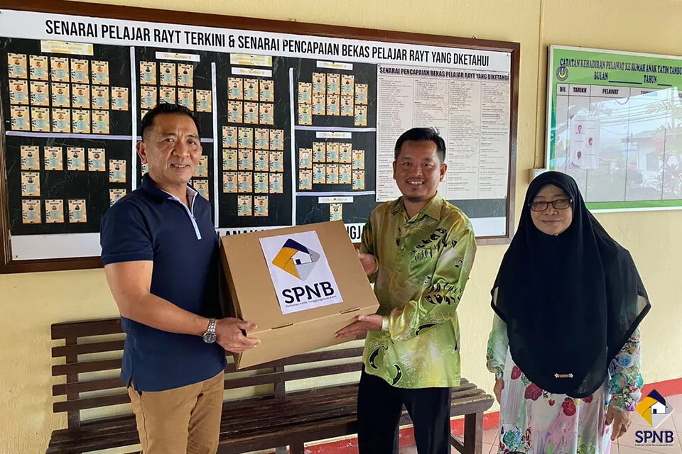
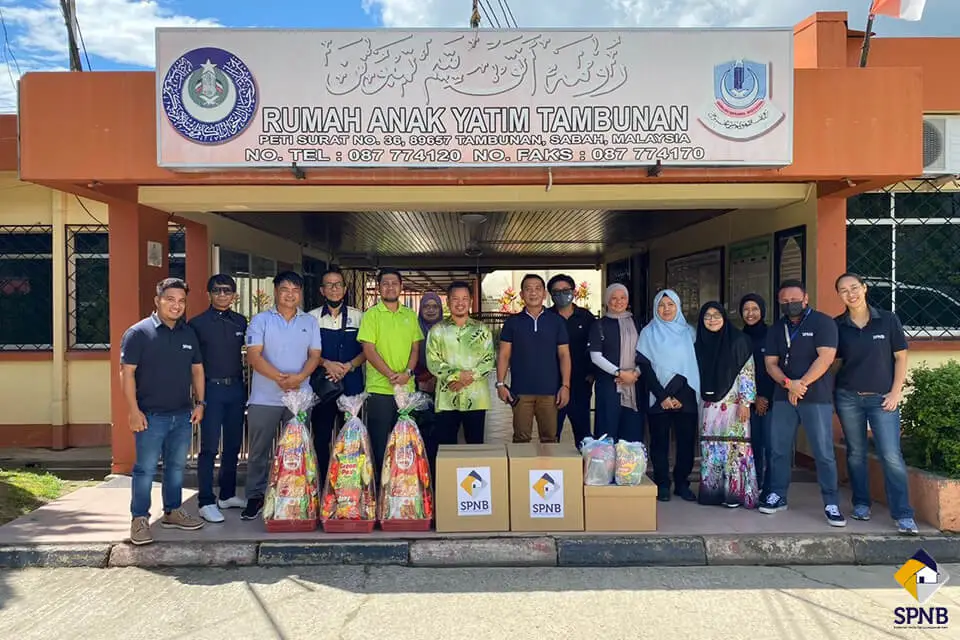

Donate Essentials
Basic items such as rice, cooking oil, stationery, hygiene products, and school supplies can support daily needs.
A caring community where children are encouraged, protected, and given hope for the future.
Rumah Anak Yatim Tambunan, a welfare-focused home in Sabah that represents care, education, and community support for children who need a stable environment.
The home accepts boys and girls who have lost both parents, or lost their father, generally under the age of 12 at the time of admission, with care continuing up to age 18.
Admission is primarily for Muslim children, though non-Muslim children may be accepted with a guardian's written consent for the child to be raised within an Islamic upbringing in line with the home's establishment under Sabah's religious welfare administration.
View Donation Instructions
Basic items such as rice, cooking oil, stationery, hygiene products, and school supplies can support daily needs.

Educational activities, reading materials, and mentoring can motivate children to build confidence in school.

Visitors should contact the home first to ask about suitable visiting hours, needs, and respectful arrangements.